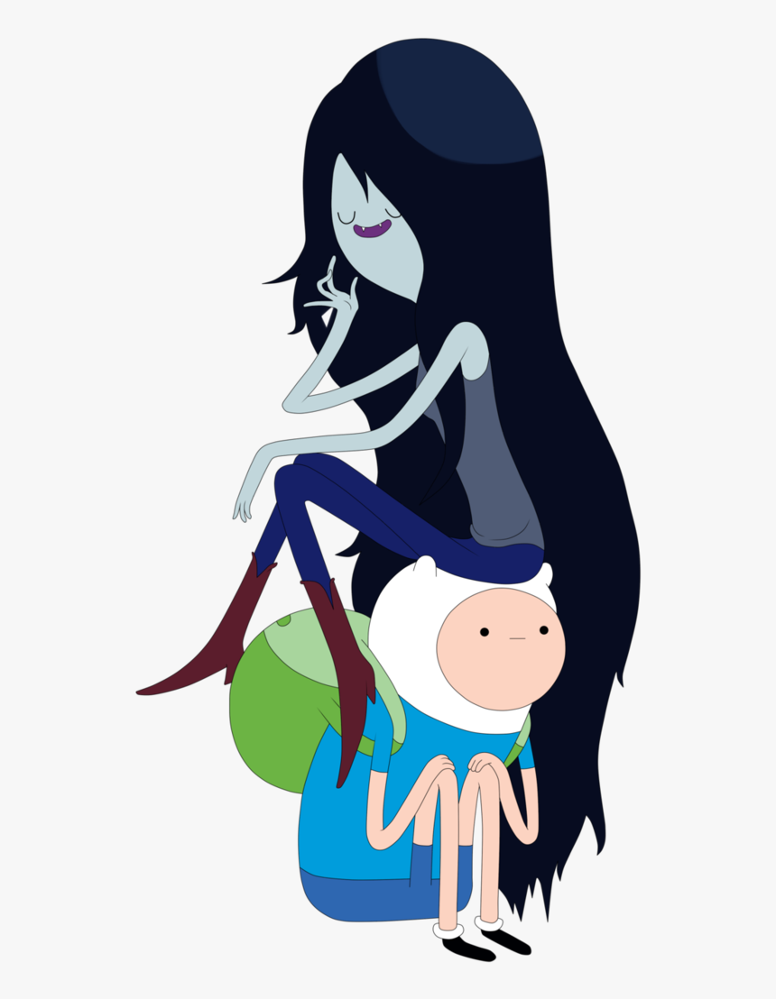

About Marceline
Marceline is a half-demon, half vampire queen. She loves red and hambo.
Marceline and her friend, Finn
Marceline's Characteristics
- She has too many ememies to count.
- She can float.
- She burns in the sun.
- She was un-vampirised for a while.
Marceline's "Friends""
Although Marceline is a good friend of Princess Bubblegum, Finn the Human and Jake the Dog, her closest friend is Simon or the Ice King. She also has many enemies as a result of her cool attitude. Click on the links below to read more about them.